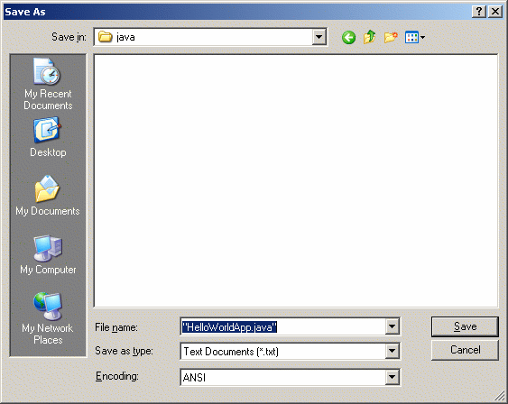
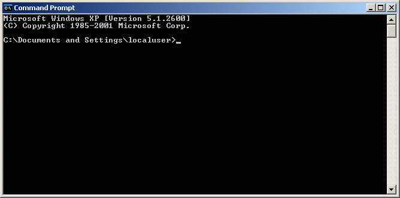
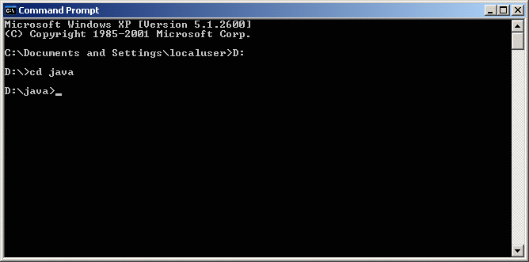
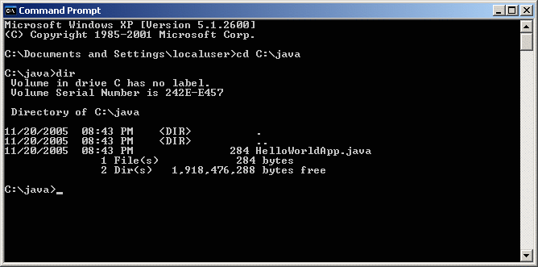
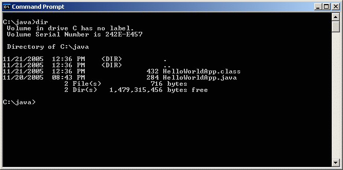
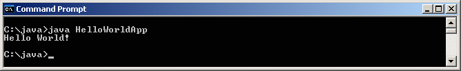

"Hello World!" for Microsoft Windows
It's time to write your first application! The following instructions are for users of Windows XP Professional, Windows XP Home, Windows Server 2003, Windows 2000 Professional, and Windows Vista. Instructions for other platforms are in "Hello World!" for Solaris OS and Linux and "Hello World!" for the NetBeans IDE.
If you encounter problems with the instructions on this page, consult the Common Problems (and Their Solutions).
A Checklist
To write your first program, you'll need:The Java SE Development Kit 6 (JDK 6)
You can download the Windows version now. (Make sure you download the JDK, not the JRE.) Consult the installation instructions.
A text editor
In this example, we'll use Notepad, a simple editor included with the Windows platforms. You can easily adapt these instructions if you use a different text editor.
These two items are all you'll need to write your first application.
Creating Your First Application
Your first application, HelloWorldApp,
will simply display the greeting "Hello world!". To create this
program, you will:
Create a source file
A source file contains code, written in the Java programming language, that you and other programmers can understand. You can use any text editor to create and edit source files.
Compile the source file into a .class file
The Java programming language compiler (
javac) takes your source file and translates its text into instructions that the Java virtual machine can understand. The instructions contained within this file are known as bytecodes.Run the program
The Java application launcher tool (
java) uses the Java virtual machine to run your application.
Create a Source File
To create a source file, you have two options:
You can save the file
HelloWorldApp.java.classFile.Or, you can use the following (longer) instructions.
First, start your editor. You can launch the Notepad editor from the Start menu by selecting Programs > Accessories > Notepad. In a new document, type in the following code:
/**
* The HelloWorldApp class implements an application that
* simply prints "Hello World!" to standard output.
*/
class HelloWorldApp {
public static void main(String[] args) {
System.out.println("Hello World!"); // Display the string.
}
}
Type all code, commands, and file names exactly
as shown. Both the compiler (
|
Save the code in a file with the name
HelloWorldApp.java.
To do this in Notepad,
first choose the File > Save As menu item.
Then, in the Save As dialog box:
-
Using the Save in combo box, specify
the folder (directory) where you'll save your file. In this example, the
directory is
javaon theCdrive. -
In the File name text field, type
"HelloWorldApp.java", including the quotation marks. - From the Save as type combo box, choose Text Documents (*.txt).
- In the Encoding combo box, leave the encoding as ANSI.

The Save As dialog just before you click Save.
Now click Save, and exit Notepad.
Compile the Source File into a .class File
Bring up a shell, or "command," window.
You can do this from the Start menu
by choosing
Command Prompt (Windows XP), or by choosing
Run... and then entering cmd.
The shell window should look similar to
the following figure.

A shell window.
The prompt shows your current directory. When you bring up the prompt, your current directory is usually your home directory for Windows XP (as shown in the preceding figure.
To compile your source file, change
your current directory to the directory where your file is located.
For example, if your source directory is
java on the C drive,
type the following command at the prompt and press
Enter:
cd C:\java
Now the prompt should change to C:\java>.
Note: To change to a directory on a different drive, you must type an extra command: the name of the drive. For example, to change to the
java directory
on the D drive, you must enter D:,
as shown in
the following figure.

Changing directory on an alternate drive.
If you enter dir at the prompt, you should see your source file,
as
the following figure shows.

Directory listing showing the .java source file.
Now you are ready to compile. At the prompt, type the following command and press Enter.
javac HelloWorldApp.java
The compiler has generated a bytecode file, HelloWorldApp.class.
At the prompt, type
dir
to see the new file that was generated,
as shown in
the following figure.

Directory listing, showing the generated .class file
Now that you have a .class file,
you can run your program.
If you encounter problems with the instructions in this step, consult the Common Problems (and Their Solutions).
Run the Program
In the same directory, enter the following command at the prompt:java HelloWorldApp
The next figure shows what you should now see:

The program prints "Hello World!" to the screen.
Congratulations! Your program works!
If you encounter problems with the instructions in this step, consult the Common Problems (and Their Solutions).